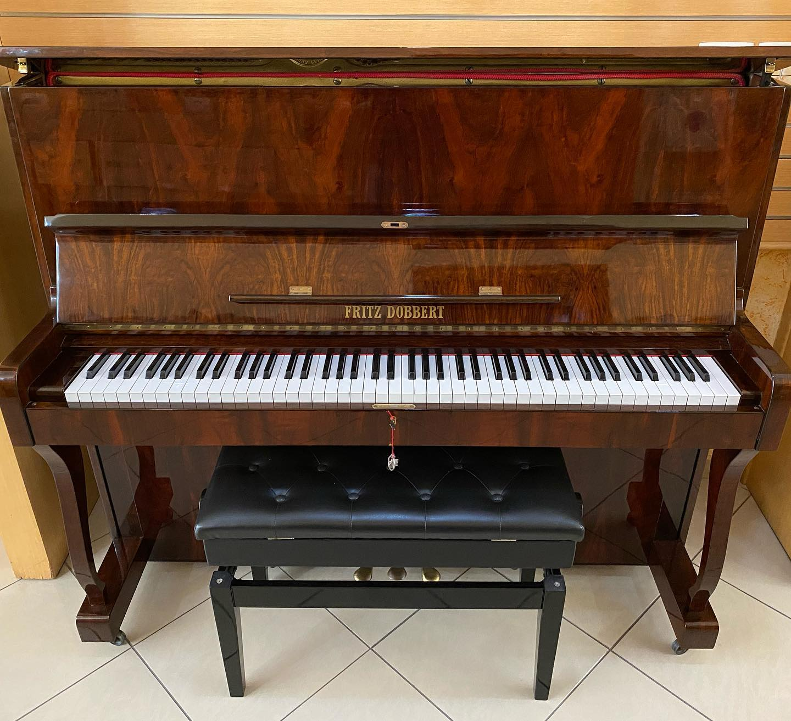
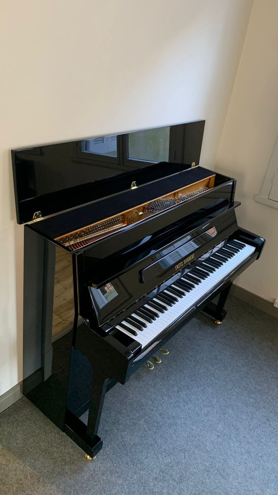
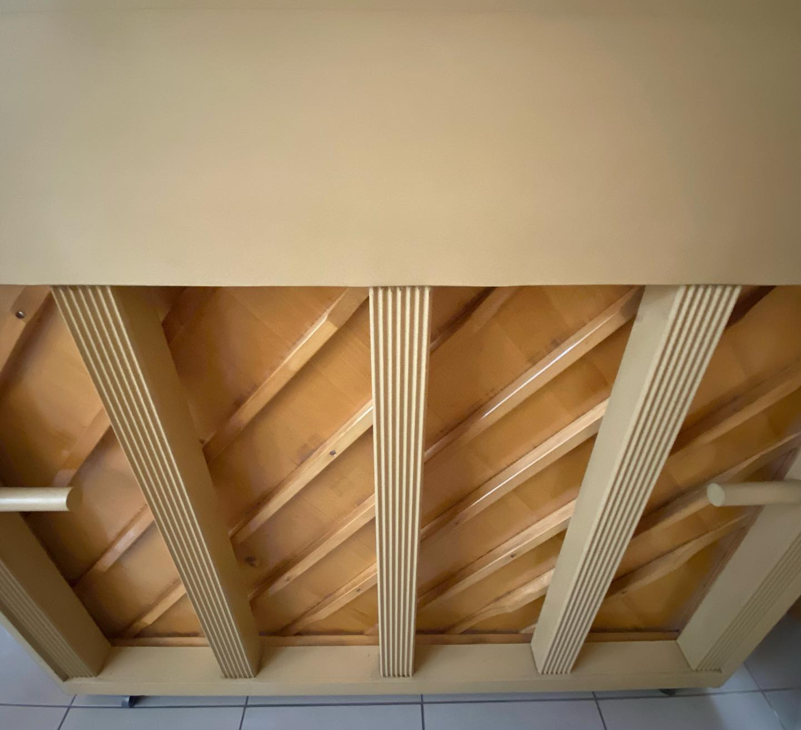
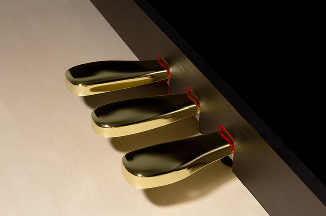
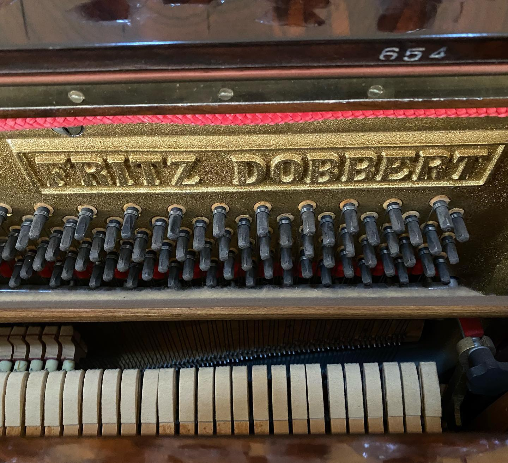

Piano Clássico de Madeira
Marca Premium
Selos:
Descrição Detalhada
Este é um magnífico piano clássico de madeira, um instrumento excepcional que combina a tradição pianística com qualidade incomparável. Fabricado em 1995, este piano mantém toda a sua nobreza e potencial sonoro, sendo ideal para pianistas profissionais, professores de música e apaixonados pelo instrumento.
Com 88 teclas completas e mecanismo de Ação Dupla de Repetição, este piano oferece controle fino e responsividade excepcional. A caixa de ressonância é feita de madeira de qualidade superior, resultando em um som cristalino, profundo e envolvente que preenche qualquer espaço.
O instrumento foi mantido com cuidado meticuloso ao longo dos anos, com manutenções regulares e afinações profissionais. Todos os pedais funcionam perfeitamente, incluindo o pedal de sustain que oferece ressonância prolongada e qualidade tonal excepcional.
Galeria de Fotos
Vista Frontal

Vista Lateral Esquerda
Vista Lateral Direita

Tampo Harmônico
Teclas

Pedais

Cordas
Vídeos Demonstrativos
Demonstração dos Pedais
Teste de Sustain
Qualidade Sonora
Especificações Técnicas
Estado de Conservação
Estrutura Externa
Em excelente estado. Sem arranhões profundos, acabamento bem preservado.
Mecanismo Interno
Completamente funcional. Todos os componentes em perfeito funcionamento.
Cordas e Caixa de Ressonância
Sem corrosão visível, som cristalino e envolvente.
Pedais
Funcionais e responsivos. Vedação perfeita.
Interessado neste Piano?
Entre em contato conosco para mais informações.